Der Jenaer Wald und wir
Digitales Arbeitsblatt
Ein digitales Arbeitsblatt für einen Workshop zur Geschichte des Jenaer Waldes und den historischen Waldberufen.
Online nutzen
HTMLCSSJavaScriptBildung
DatastructureLab
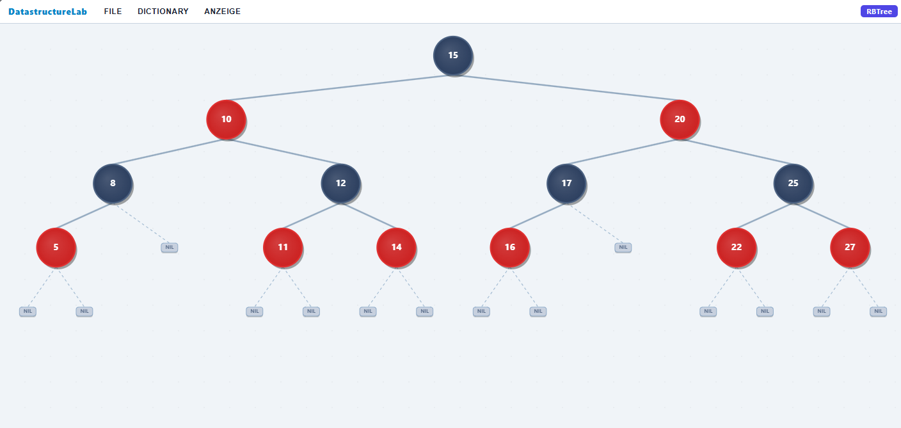
2026
Interaktives Labor zum Erstellen, Visualisieren und Ausprobieren zentraler Datenstrukturen und ihrer Operationen.
Online nutzen
InfoPedia öffnen
DatenstrukturenAlgorithmenJavaScript
AutomataLab
q0 → q1
2026
Werkzeug zum Konstruieren, Simulieren und Transformieren endlicher Automaten, Kellerautomaten und Turingmaschinen.
Online nutzen
AutomatenSimulationJavaScript
AlgoDat-Kurs
O(n log n)
2026
Interaktiver Kurs zu Algorithmen, Datenstrukturen, Laufzeitanalyse und Sortierverfahren.
Online nutzen
AlgorithmenDatenstrukturenE-Learning
GVIS
GVIS
Geo-Analyse
Statisches GIS-Werkzeug fuer OSM-/GeoJSON-/CSV-Daten: Query formulieren, POIs, Vegetation, Gebaeude und Wege bewerten und wahrscheinliche Punkte auf einer OSM-Karte anzeigen.
Online nutzen
GISOpenStreetMapGeoGuessrJavaScript
JenaTramBoard
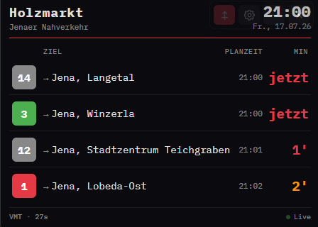
Kleines Bastelprojekt
Kompakter Abfahrtsmonitor für Jenaer Straßenbahnen: lokale Web-UI, Desktop-Fenster und Einstellungsseite für Linien, Haltestellen, Darstellung und kleine Zusatzdisplays.
Link zum: GitHub-Repositorium
PythonFlaskHTMLDesktop-App
TI-Trainer
TI
Interaktive Lernumgebung
Strukturierte Lernmodule zu Automaten, Algorithmen und Datenstrukturen, Personen der Informatik sowie der Von-Neumann-Architektur.
Online nutzen
Technische InformatikInteraktivE-Learning
AlgorithmPlanner
AP
2026
Ein visueller Baukasten zum Modellieren von Programmabläufen als Struktogramm oder Flussdiagramm sowie von Klassen als UML-Diagramm. Aus dem Modell wird Code für Java, C#, C++, Python, Prolog oder JavaScript generiert.
🔗 Online nutzen
HTMLCSSJavaScriptCodegenerierung
Hologramm-History
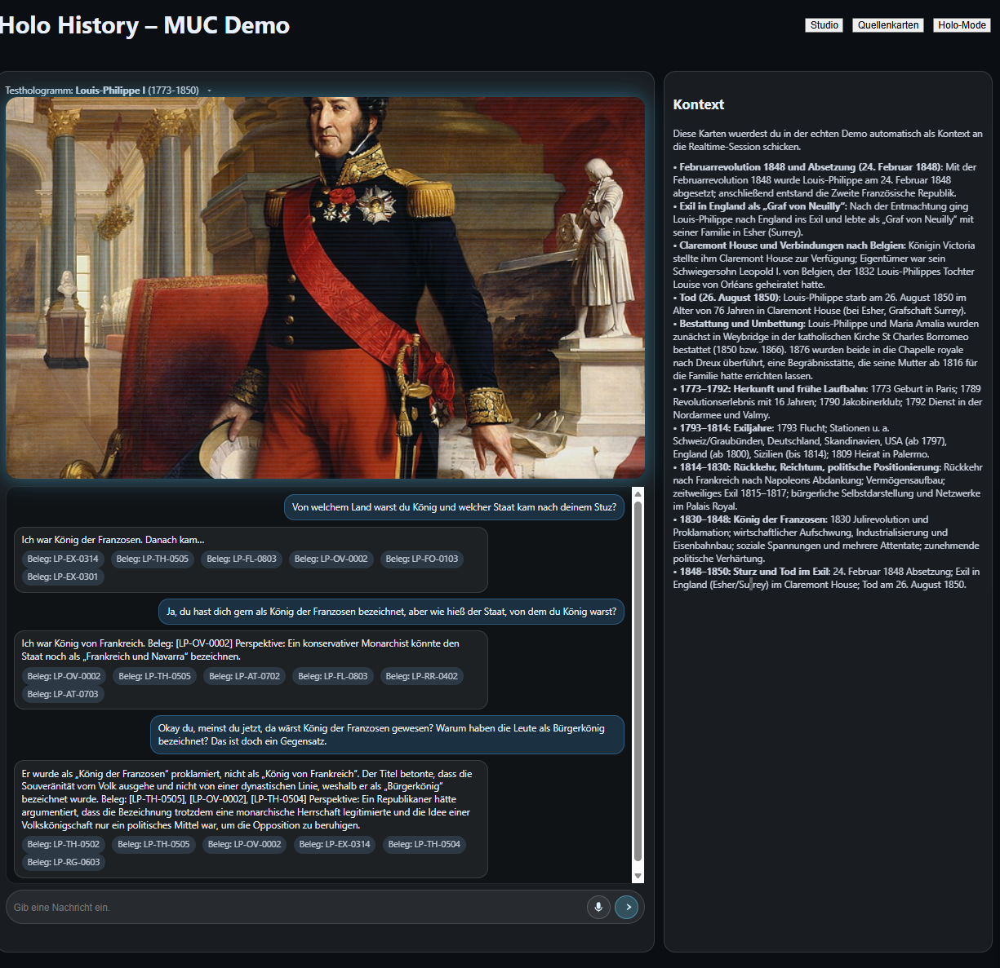
Wintersemester 2025
Eine Webanwendung, mit der man an Abbildungen (später Hologrammen) von historischen Persönlichkeiten Fragen stellen kann. Anwendung noch in Entwicklung.
Link zum: GitHub-Repositorium
HTMLCSSJavScriptGPT
Markdown-Generator
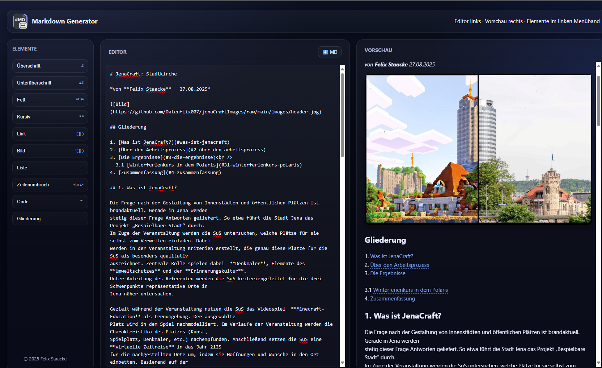
Sommersemester 2025
Eine Webanwendung, mit der die Benutzer eine Markdown Datei erzeugen können. Dabei können die MarkDown Elemente als Baukasten Prinzip eingefügt werden. Orientiert ist dies für SuS und Kollegen.
Link zum: GitHub-Repositorium
🔗 Online nutzen
HTMLCSSJavScript
Manuskript-Maker
still in progress
still in progress
🔗 Online nutzen
PythonHTMLCSSJavaScriptBatchFile
Meme-Maker
still in progress
still in progress
🔗 Online nutzen
PythonHTMLCSSJavaScriptBatchFile
MySQL-Trainee-Ground

Wintersemester 2025
Via Docker wird hier die mysql und phpmyadmin Umgebung bereitgestellt, um SQL-Kenntnisse zu erlernen und zu vertiefen. Es sind verschiedene Übungsaufgaben integriert, die das Arbeiten mit Datenbanken erleichtern sollen. Das Projekt ist auf Github
SQLDOCKERPHP
MyWebHub
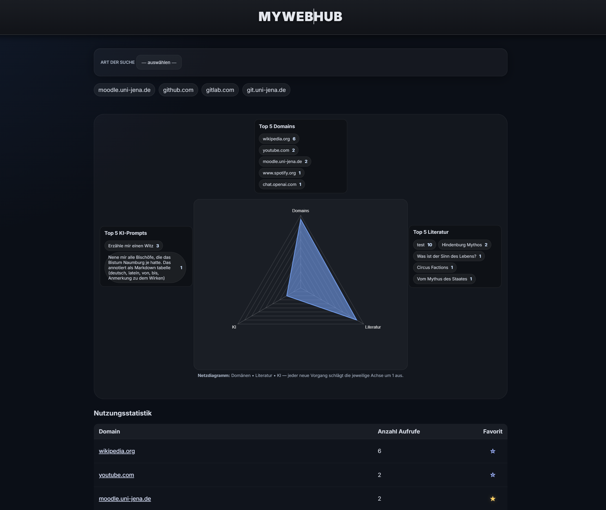
Sommersemester 2025
Eine Startseite für meinen Webbrowser. Alle Daten werden in dem lokalen Speicher von dem Browser espeichert.
Link zum: GitHub-Repositorium
HTMLCSSJava Script
OCR-Extractor
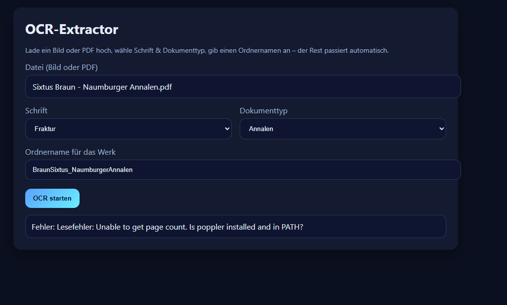
Sommersemester 2025
still in progress
Link zum: GitHub-Repositorium
PythonHTMLCSSJavaScriptBatchFile
QR-Generator
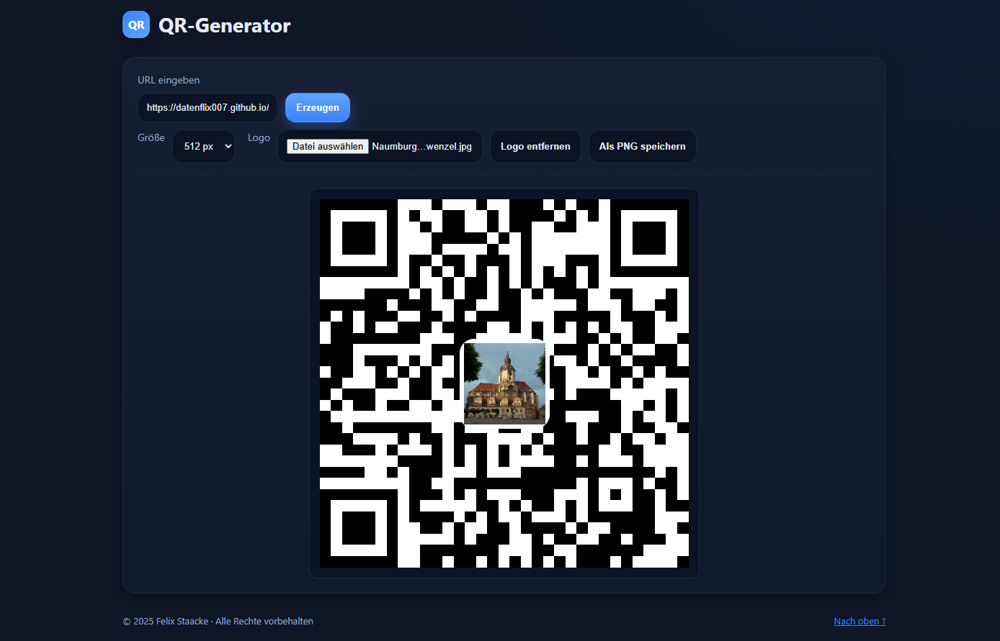
Sommersemester 2025
Eine Webanwendung, um QR-Codes zu generieren. Dabei können die Benutzer die Größe des QR-Codes anpassen und in der Mitte ein Logo (etwa von der Organisation) einfügen.
🔗 Online nutzen
HTMLCSSJavScript
Scrum 4 School
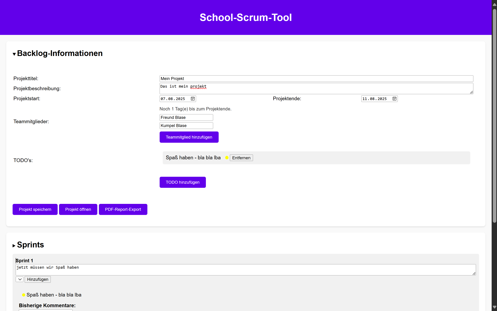
Wintersemester 2024/2025
Eine Webanwendung, mit der die Schülerinnen und Schüler in einer Sequenz das strukturierte Arbeiten üben sollten. Ursprünglich für eine 11. Klasse eines Gymnasiums konzipiert und Anwendung in dem Praxissemster findent, kann das Tool auch in anderen Klassenstufen
und Schulformen eingesetzt werden.
Link zum: GitHub-Repositorium
🔗 Online nutzen
HTMLCSSJavScript
School-Notebook
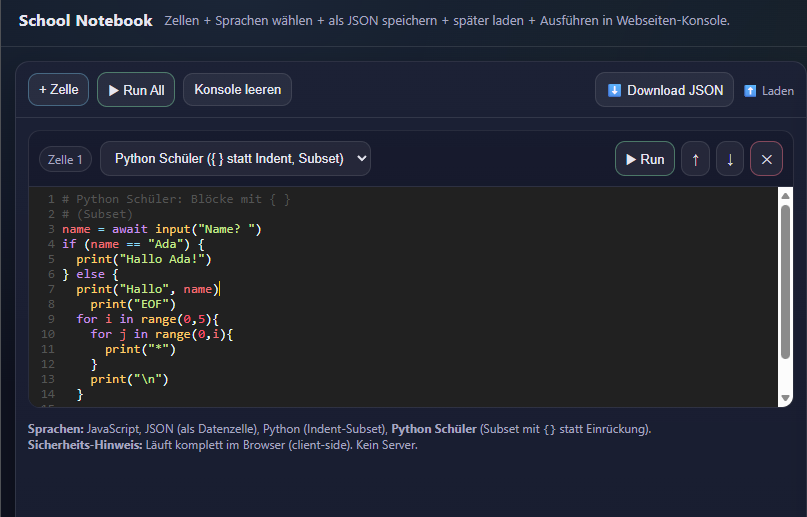
Wintersemester 2025/2026
Eine Webanwendung, mit der die Schülerinnen und Schüler mithilfe einer Webseite eine Python nachempfundene Sprache erlernen. In der UI wird eine IDE und eine Konsole imitiert, im backend durch JS nachempfunden.
Link zum: GitHub-Repositorium
🔗 Online nutzen
HTMLCSSJavScriptPython-Imitation
Zotero x Docker x Github
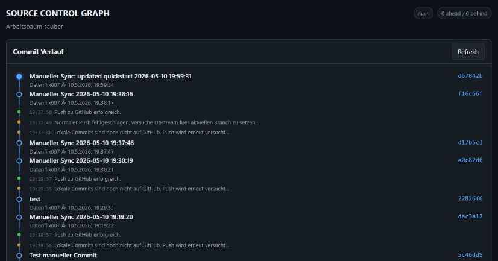
2026
Ein Setup, das Zotero mit einem selbst gehosteten WebDAV-Server verbindet, der via Docker betrieben und über GitHub bereitgestellt wird. So lässt sich die Zotero-Literaturdatenbank ohne kommerzielle Cloud-Dienste synchronisieren – datenschutzfreundlich, kostenlos und vollständig unter eigener Kontrolle.
Link zum: GitHub-Repositorium
DockerWebDAVZoteroGitHub
TIVisualizer
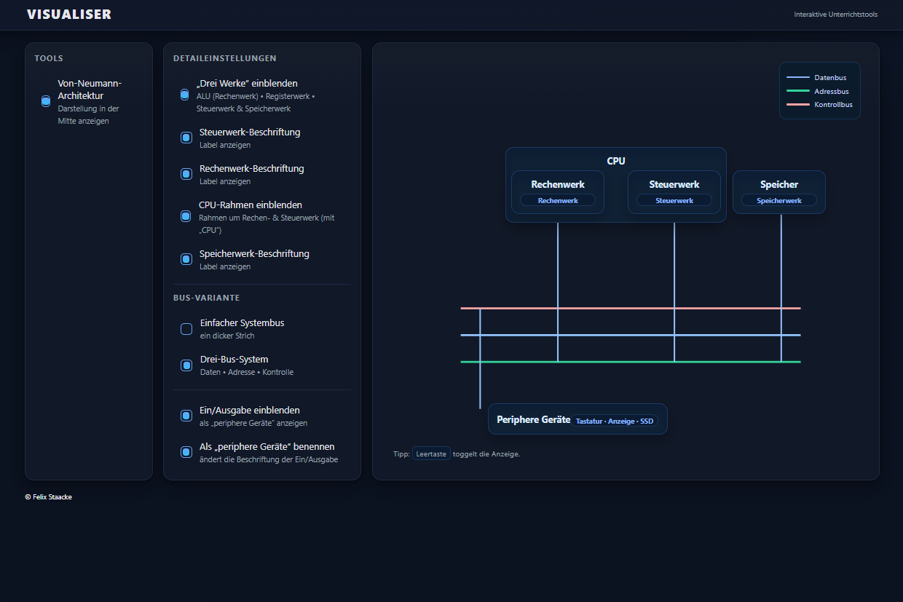
Sommersemester 2025
Eine Webanwendung, mit der die der Aufbau der "Von Neumann Architektur" visualisiert wird. Dabei können die Benutzer die einzelnen Komponenten der Architektur anklicken. Still in progress...
Link zum: GitHub-Repositorium
🔗 Online nutzen
HTMLCSSJavScript